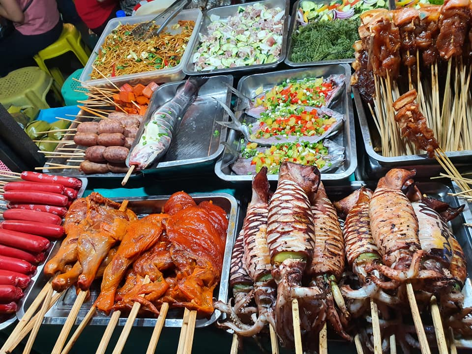

Adventure

- Zipline across Bukidnon's pine forests (Dahilayan)
- River tubing and rappelling in Mapawa Nature Park
- Hiking to scenic viewpoints and waterfalls
Culture

- Attend local festivals (e.g., Kaamulan in Bukidnon)
- Visit traditional communities and craft markets
- Explore museums and local heritage sites
Food & Markets
- Try native delicacies and street food in Cagayan de Oro
- Seafood feasts in coastal towns and Camiguin
- Visit local markets for fresh produce and handicrafts